TL;DR: DIVE decomposes multi-object videos into per-object appearance, pose, and binary missingness latent variables, imputing missing frames in latent space to reconstruct corrupted inputs and forecast future video.
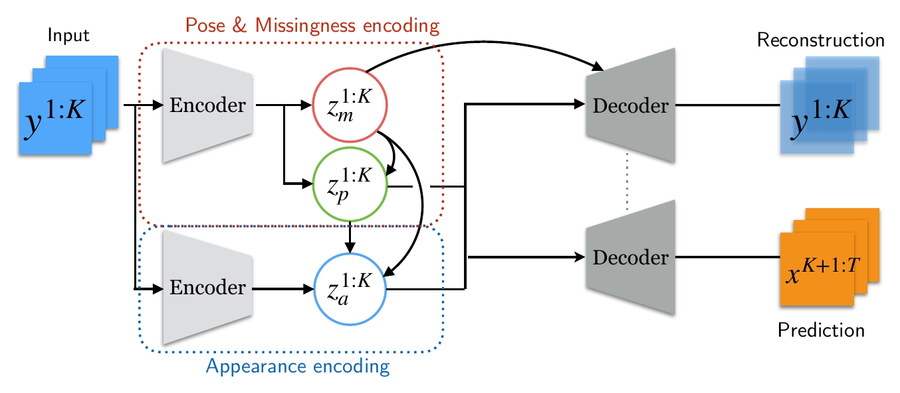
Missing data poses significant challenges while learning representations of video sequences. We present Disentangled Imputed Video autoEncoder (DIVE), a deep generative model that imputes and predicts future video frames in the presence of missing data. Specifically, DIVE introduces a missingness latent variable, disentangles the hidden video representations into static and dynamic appearance, pose, and missingness factors for each object. DIVE imputes each object’s trajectory where the data is missing. On a moving MNIST dataset with various missing scenarios, DIVE outperforms the state of the art baselines by a substantial margin. We also present comparisons on a real-world MOTSChallenge pedestrian dataset, which demonstrates the practical value of our method in a more realistic setting. Our code and data can be found at https://github.com/Rose-STL-Lab/DIVE.
Learning structured representations from raw video is fundamental to spatiotemporal reasoning and forecasting. Yet real-world video sequences frequently suffer from missing data: objects become partially occluded at frame boundaries, temporarily disappear out of view before reappearing, or vanish while changing their shape, scale, or brightness. Even a five-month-old infant understands object permanence—that an unseen object continues to exist and move along a coherent trajectory.
Existing disentangled video prediction models lack this capability when objects go missing:
Disentangled Imputed Video autoEncoder (DIVE) addresses these limitations by explicitly inferring object-level missingness, imputing missing trajectories directly in the hidden state space, and modeling both static and dynamic object appearances.
Disentangled object representations. Given an observed video sequence with missing data (y1, …, yK) where each frame yt ∈ ℝd, DIVE assumes up to N objects per scene and jointly reconstructs the input sequence y1:K and predicts T − K + 1 future frames xK+1:T. For each object i at frame t, its latent representation zit factorizes into three semantic variables:
where zi,at is the object appearance vector, zi,pt encodes object pose (x, y coordinates and scale), and zi,mt ∈ {0, 1} is the binary missingness indicator (zi,mt = 1 when object i is occluded or missing).
Latent-space imputation model. A bidirectional LSTM propagates per-object input encodings hi,yt = fenc(hi,yt−1, hi,yt+1, [yt, hi−1,yt]) over time. When an object is missing, hi,yt is unreliable; DIVE therefore predicts an autoregressive imputed state ĥi,yt = FC(hi,pt−1) from the previous pose LSTM state and updates the latent input uit via a Bernoulli mixture:
Mixing observed and imputed states during training (p = 0.25) mitigates covariate shift and forces self-supervised trajectory imputation; at test time p = 0 uses ĥi,yt whenever zi,mt = 1. The pose hidden state advances via hi,pt = LSTM(hi,pt−1, uit).
Inference of missingness, pose, and dynamic appearance.
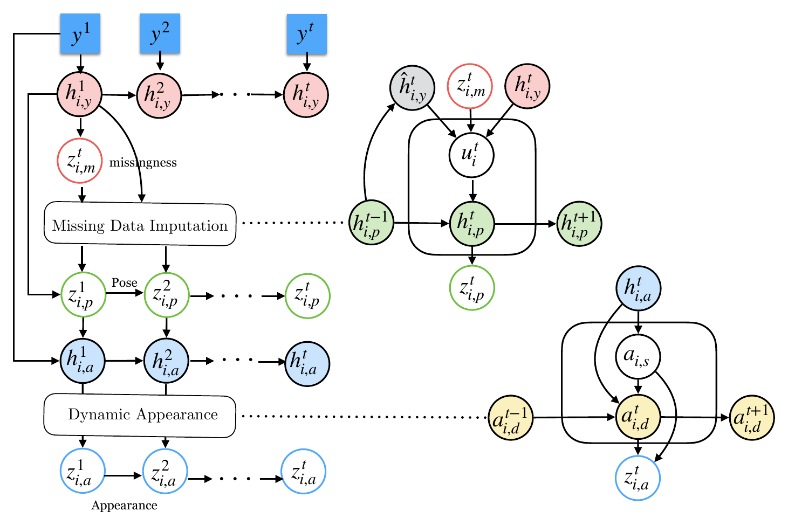
For each object i, a deconvolutional decoder fdec(zi,at) synthesizes the canonical object appearance, and a spatial transformer 𝒯(·; zi,pt) scales and places it into the scene. During input reconstruction, each object is masked by (1 − zi,mt), whereas future predictions assume complete frames:
Each generated frame sums the decoded contributions across all N objects, and DIVE is trained end-to-end by maximizing the Evidence Lower Bound (ELBO) over both the corrupted input reconstruction y1:K and complete future prediction xK+1:T:
DIVE is evaluated on predicting 10 future frames from 10 input frames against three state-of-the-art disentangled video prediction baselines: DRNET, SQAIR, and DDPAE. On Moving MNIST (two 28 × 28 digits moving in 64 × 64 frames, tested on 1,024 fixed sequences), three missing-data scenarios are studied:
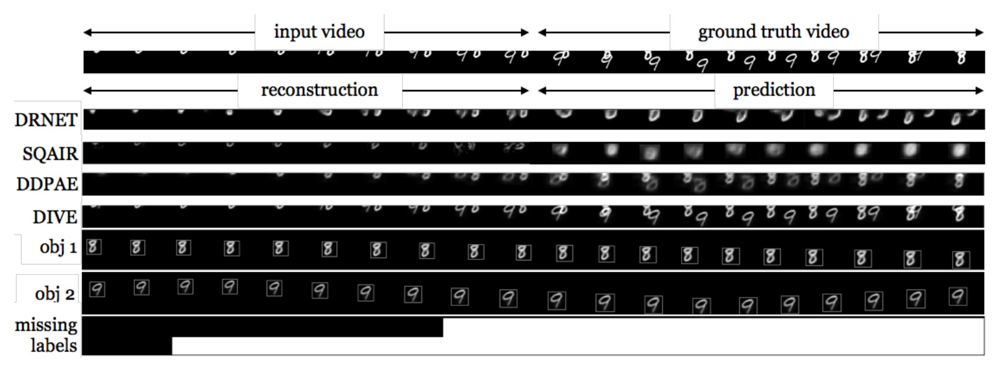
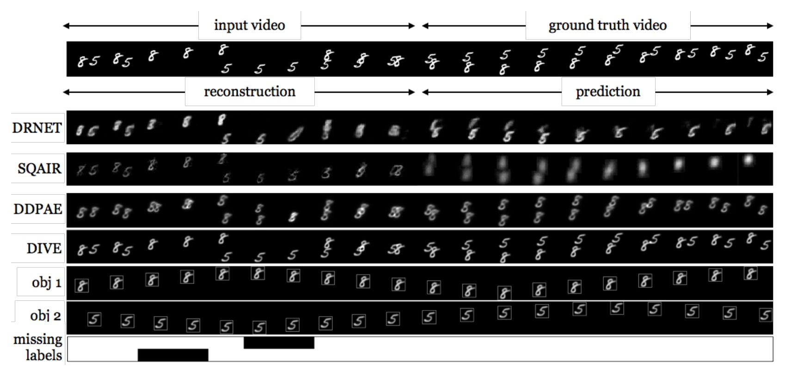
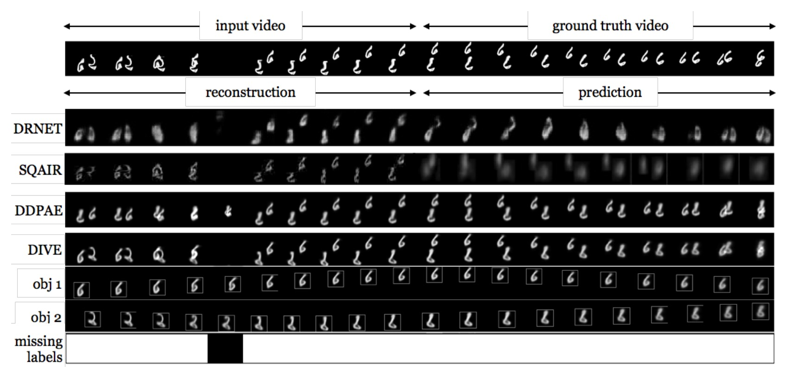
| Model | BCE ↓ | MSE ↓ | PSNR ↑ | SSIM ↑ | NELBO ↓ | ||||
|---|---|---|---|---|---|---|---|---|---|
| Rec | Pred | Rec | Pred | Rec | Pred | Rec | Pred | ||
| Scenario 1: Partial Occlusion | |||||||||
| DRNET | 482.07 | 852.59 | 72.21 | 96.36 | 7.99 | 6.89 | 0.76 | 0.72 | / |
| SQAIR | 178.71 | 967.20 | 21.84 | 84.73 | 13.19 | 9.96 | 0.90 | 0.73 | -0.16 |
| DDPAE | 182.66 | 417.00 | 39.09 | 67.41 | 17.56 | 15.49 | 0.77 | 0.72 | -0.09 |
| DIVE | 119.25 | 459.10 | 19.73 | 64.49 | 20.64 | 15.85 | 0.90 | 0.78 | -0.18 |
| Scenario 2: Out of Scene | |||||||||
| DRNET | 392.33 | 1402.45 | 90.64 | 187.72 | 9.59 | 9.88 | 0.80 | 0.67 | / |
| SQAIR | 468.22 | 927.09 | 73.13 | 137.04 | 10.33 | 8.21 | 0.84 | 0.69 | -0.17 |
| DDPAE | 266.03 | 409.26 | 58.37 | 89.57 | 18.64 | 16.94 | 0.87 | 0.77 | -0.17 |
| DIVE | 165.42 | 321.29 | 27.03 | 64.17 | 22.15 | 18.56 | 0.93 | 0.83 | -0.21 |
| Scenario 3: Missing with Varying Appearance | |||||||||
| DRNET | 421.72 | 1304.53 | 90.46 | 176.28 | 9.91 | 7.33 | 0.75 | 0.70 | / |
| SQAIR | 560.51 | 1518.61 | 74.30 | 163.25 | 10.80 | 7.64 | 0.83 | 0.62 | -0.16 |
| DDPAE | 322.23 | 403.48 | 63.63 | 82.71 | 18.29 | 17.22 | 0.81 | 0.78 | -0.18 |
| DIVE | 272.74 | 374.59 | 42.81 | 74.87 | 20.08 | 17.61 | 0.87 | 0.78 | -0.19 |
To evaluate DIVE beyond synthetic digits, experiments are conducted on the real-world Multi-Object Tracking and Segmentation (MOTSChallenge) pedestrian dataset. Ground-truth pedestrian silhouettes are extracted into 20-frame sequences at 256 × 256 resolution with up to N = 3 unique pedestrians, augmented with simulated constant camera motion and a 1-frame complete camera occlusion (4,416 training sequences and 675 test sequences from distinct scenes).
Walking pedestrians naturally combine partial occlusions (Scenario 1) with continuously varying appearance (Scenario 3) as limbs articulate and pedestrians overlap. Because DDPAE assumes fixed object appearance and lacks missingness modeling, its reconstructions and forecasts blur out. DIVE isolates up to three individual pedestrians, detects the occluded frame, and preserves sharp silhouettes throughout prediction, reducing MSE by over 41% and BCE by over 45%.
| Model | BCE ↓ | MSE ↓ | PSNR ↑ | SSIM ↑ | NELBO ↓ |
|---|---|---|---|---|---|
| DDPAE | 2495.08 | 560.37 | 22.22 | 0.90 | -0.24 |
| DIVE | 1355.89 | 328.96 | 24.82 | 0.96 | -0.26 |
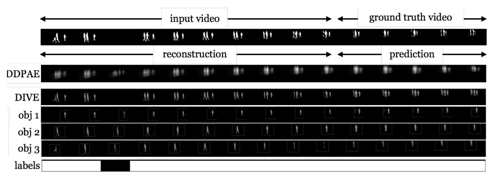
Dynamic vs. static appearance (Appendix C.1): On Moving MNIST Scenario 3, comparing DIVE with dynamic appearance (p = 1 at test time) against a static-only variant (p = 0) and DDPAE across 200–600 training epochs confirms that dynamic appearance modeling substantially lowers reconstruction BCE and MSE on elastically deformed digits, while both DIVE variants outperform DDPAE by a wide margin in both reconstruction and prediction.
Explicit missingness & imputation (Appendix C.2): Removing the binary missingness variable and latent imputation from the exact same DIVE architecture on Scenario 2 degrades every metric across both reconstruction and prediction, confirming that explicit missingness reasoning improves scene dynamics learning. Replacing the hard Heaviside step function with a soft Sigmoid label zi,mt ∈ (0, 1) yields no statistically significant difference.
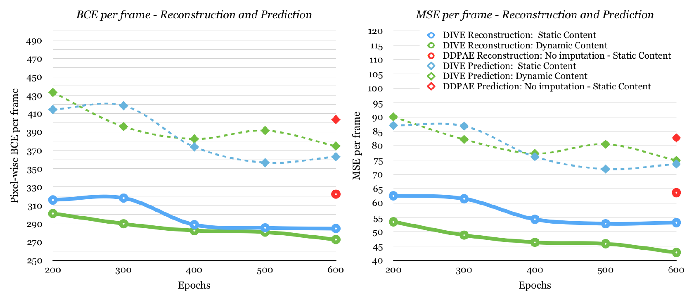
| Mov. MNIST Scenario 2 Model (trained 300 epochs) |
BCE ↓ | MSE ↓ | PSNR ↑ | SSIM ↑ | ||||
|---|---|---|---|---|---|---|---|---|
| Rec | Pred | Rec | Pred | Rec | Pred | Rec | Pred | |
| DIVE w/o missingness | 236.35 | 356.82 | 49.07 | 76.52 | 19.40 | 17.66 | 0.86 | 0.82 |
| DIVE w missingness | 165.42 | 321.29 | 27.03 | 64.17 | 22.15 | 18.56 | 0.93 | 0.83 |
Additional qualitative examples across all four benchmarks illustrate both the strengths and boundary conditions of DIVE's causal imputation:
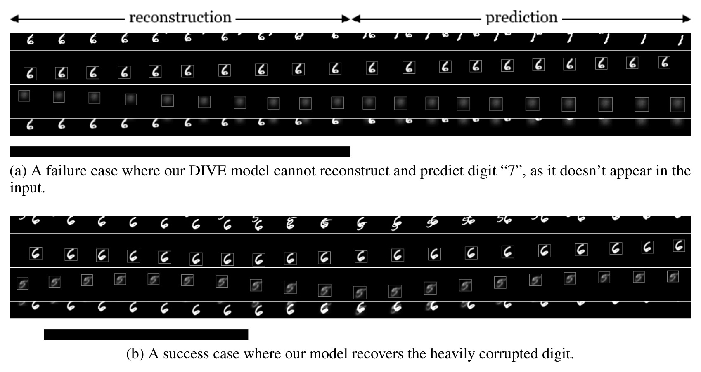
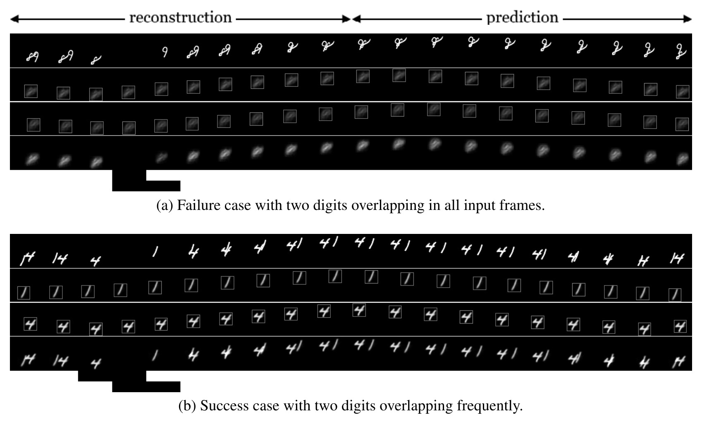
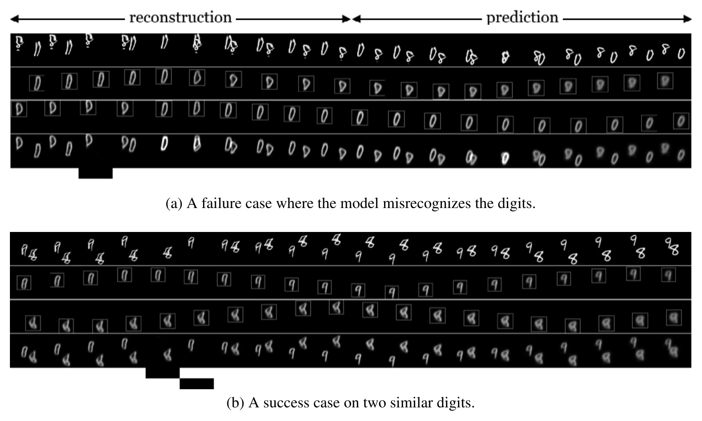
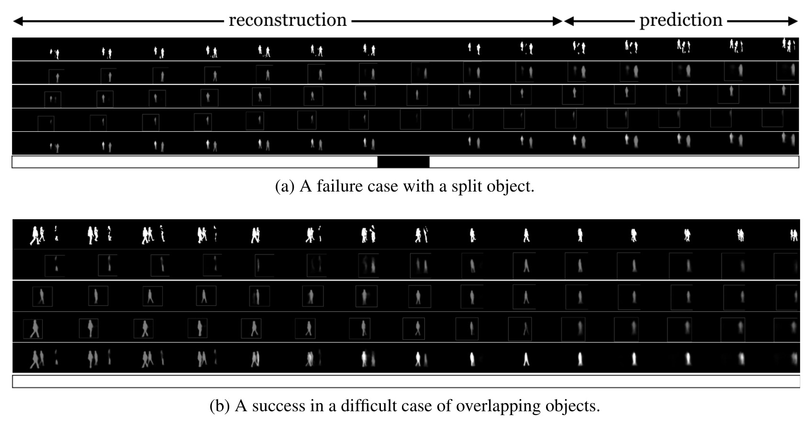
@inproceedings{comas2020learning,
title = {Learning Disentangled Representations of Video with Missing Data},
author = {Comas, Armand and Zhang, Chi and Feric, Zlatan and Camps, Octavia and Yu, Rose},
booktitle = {Advances in Neural Information Processing Systems},
volume = {33},
pages = {10189--10200},
year = {2020},
url = {https://arxiv.org/abs/2006.13391}
}